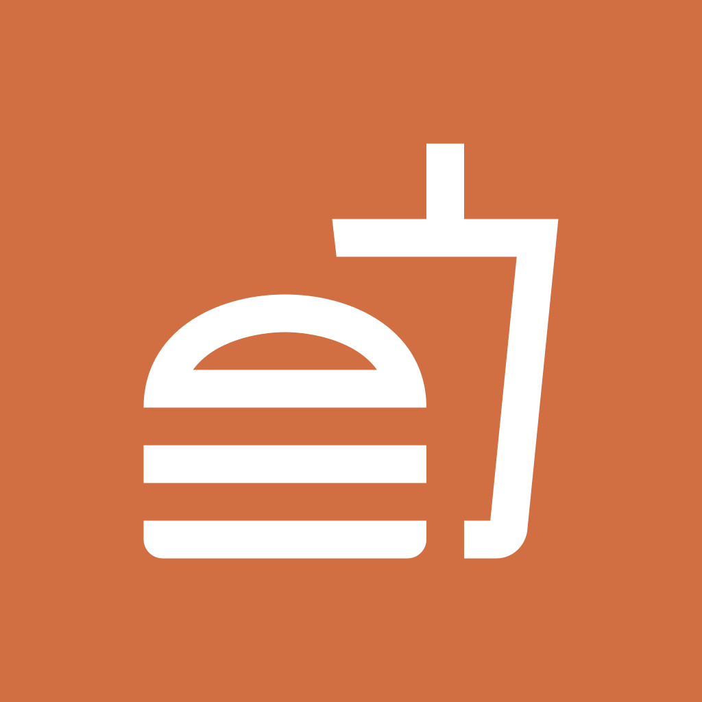

Mommy's KitchenWe keep the policy plain.
This policy explains what information the Mommy's Kitchen iPhone app uses, why it is used, and how account deletion works.
Information we collect
- Account details you provide when signing up, including your name, email address, and phone number.
- Order information such as items ordered, order timestamps, order notes, and order status history.
- Technical delivery data needed for notifications, including APNs device tokens.
How information is collected
- We collect information directly from you when you create an account, edit your profile, place an order, or add notes for the kitchen.
- We collect operational data from app use, such as order status changes and notification registration, so the app can stay in sync with the kitchen system.
- Push notification tokens are collected only after your device registers with Apple Push Notification service (APNs).
How we use information
- To create and secure your customer account.
- To place, manage, and fulfill food orders.
- To send operational notifications such as accepted, ready, cancelled, or rejected order updates.
- To maintain reliable app performance and kitchen operations.
Services and sharing
- Backend services are operated using Supabase for authentication, database storage, and server-side functions.
- Push notifications are delivered through Apple Push Notification service (APNs).
- These service providers process data only to operate the app and provide the same or equivalent protection of user data described in this policy.
- We do not sell personal information and we do not share personal data for third-party advertising.
Retention and deletion
- Account details remain associated with your profile while your account is active.
- Device tokens are retained only while needed to deliver notifications to your active account.
- You can request deletion directly inside the app from the Profile tab.
- When you delete your account, access to the app is removed and your stored contact details are deleted from the active customer profile.
- Past order records may be retained in anonymized form for kitchen history, fraud prevention, and operational recordkeeping.
Your choices
- You can update your profile details inside the app.
- You can delete your account inside the app from the Profile tab.
- You can stop push notifications at any time in iPhone Settings for the Mommy's Kitchen app.
Contact
For privacy or support questions, use the support page linked below or open an issue in the project support tracker.